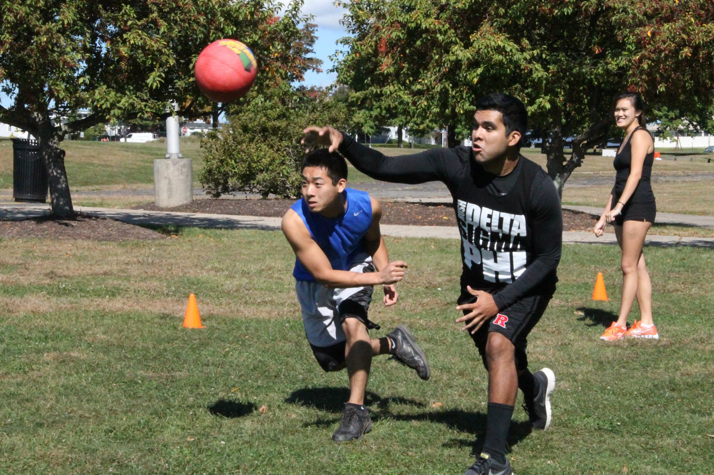
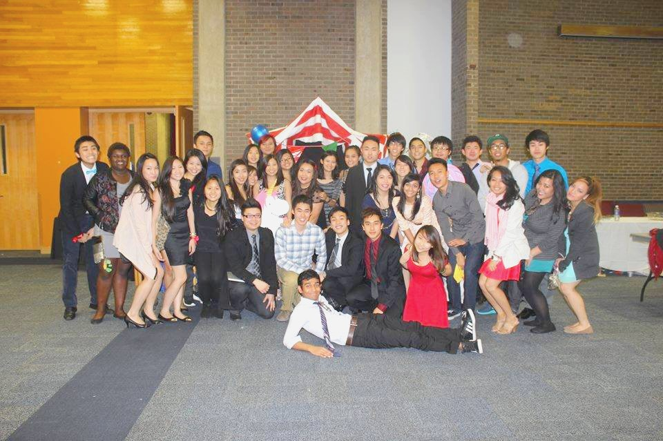
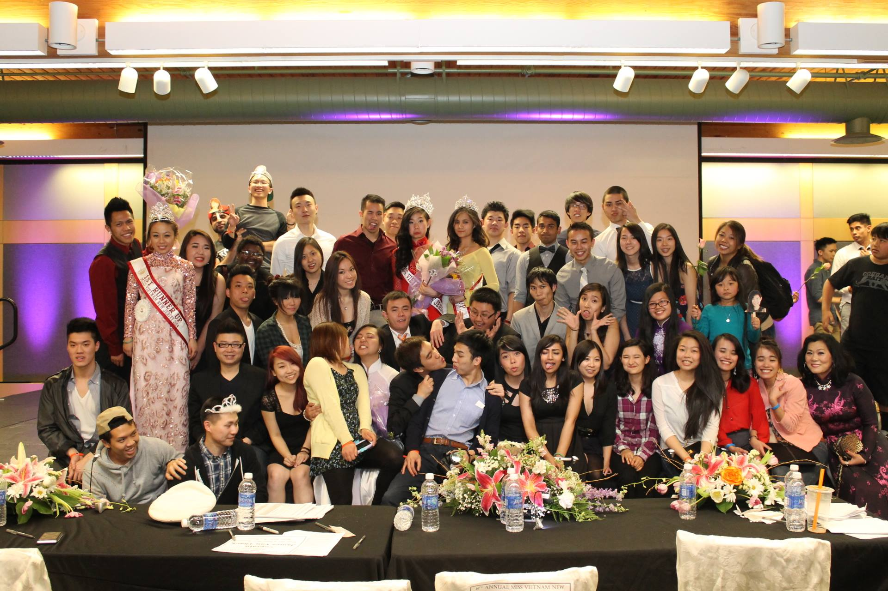
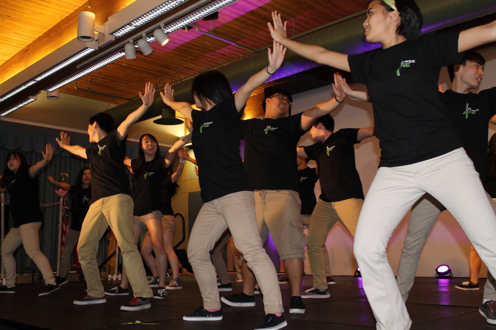
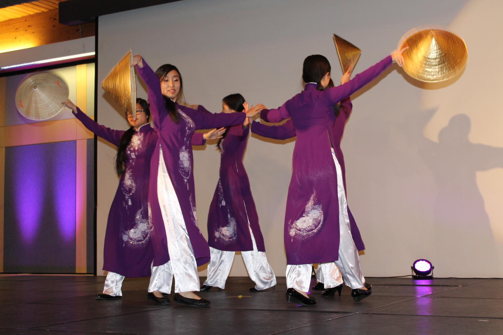

Rutgers VSA
Vietnamese Student Association
Vietnamese Student Association
The mission of the Vietnamese Student Association (VSA) at Rutgers University is to promote an awareness and appreciation of Vietnamese culture. VSA is open to people of all cultures, ethnicities, and backgrounds, and encourages any person that is interested in Vietnamese culture to join. VSA serves to create culturally, socially, and educationally significant events that stimulate understanding among the Vietnamese people and their communities. Furthermore, VSA provides its members with an opportunity to interact and exchange ideas vital to the growth and prosperity of their communities. VSA is a student organization, which offers guidance and provides a support network for any and all students. VSA is dedicated to serve the public through community service, teaching of the Vietnamese language and culture.
Verse|One Dance Captain
VSA usually holds weekly or bi-weekly meetings for its general members. Icebreakers and games? Check. Food? Check. Lots of fun? Check. Here are some of our big events for the year!
Survival of the Fittest!
Asian Gala!
Miss Vietnam New Jersey!
Verse|One is the first Asian-American audition-free equal opportunity dance troupe founded by the Vietnamese Student Association at Rutgers University. VerseOne's mission is to expose, enlighten, and enforce a comfortable dance environment for all levels, especially beginners. VerseOne strives to enable dancers to excel in the art. VerseOne was founded by Cook College graduate Roxanne Franco. She introduced Verse|One into the Rutgers scene in 2006 and has continued to play a crucial role in the dance troupe.
VCDT is a performance group dedicated to using dance as a way to further help VSA’s mission in promoting awareness and appreciation of the Vietnamese culture. VCDT’s performances focus on cultural and traditional dances of the Vietnamese people fused with modern dance styles. This includes dances of the tribes, dances using the symbolic conical hat of the Vietnamese farmers (non la), as well as other props (scarves, umbrellas, fans, etc.) that traditional Vietnamese dances include.
